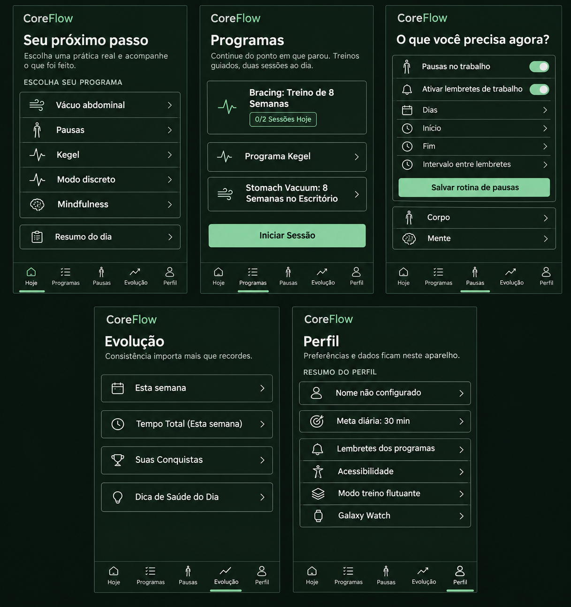
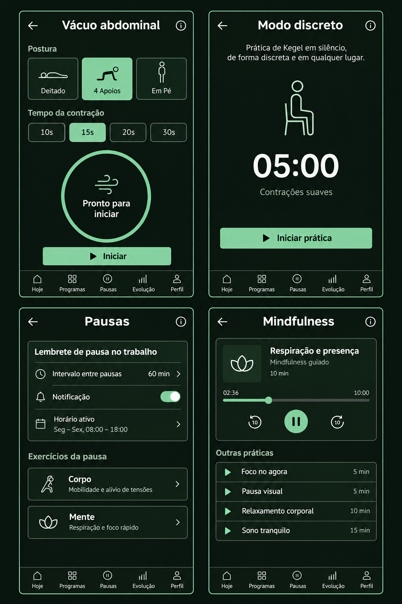
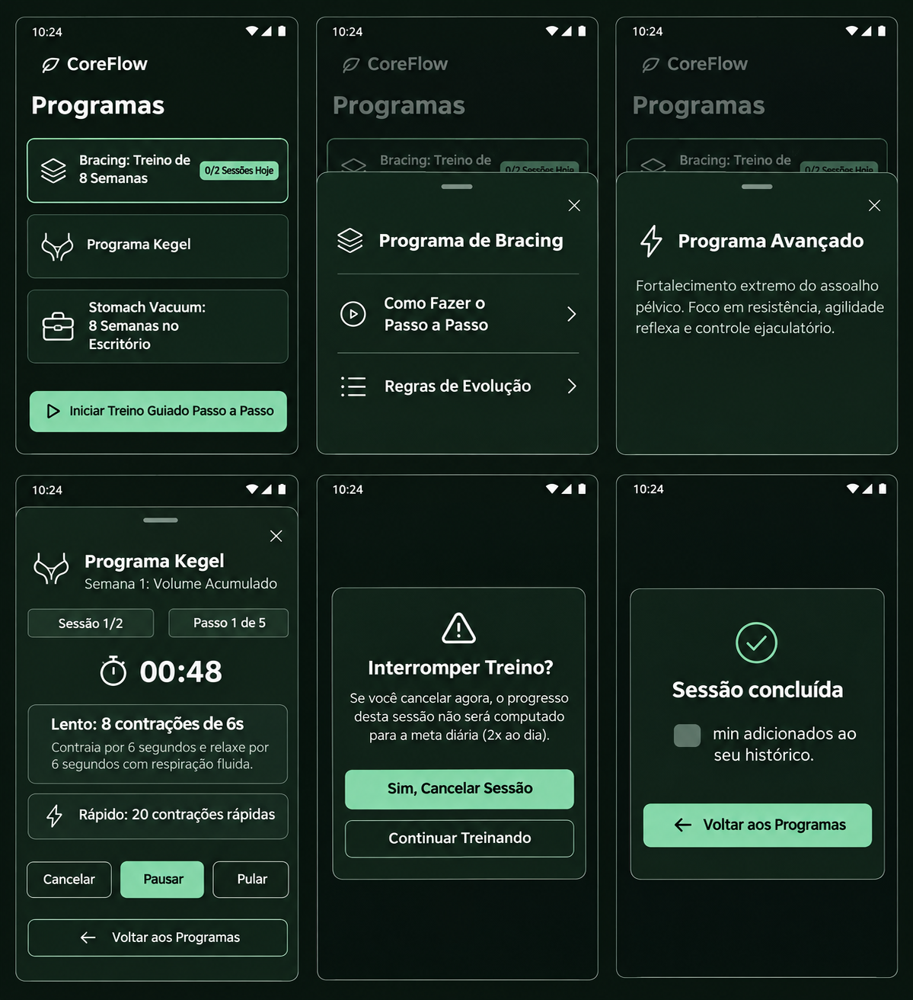
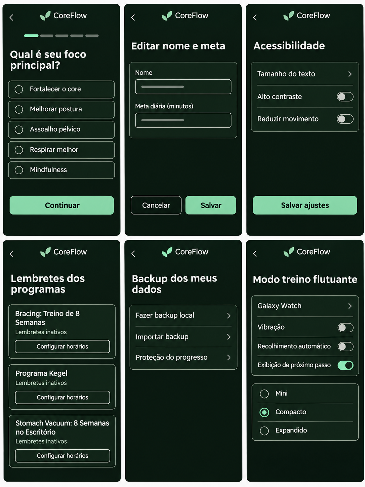
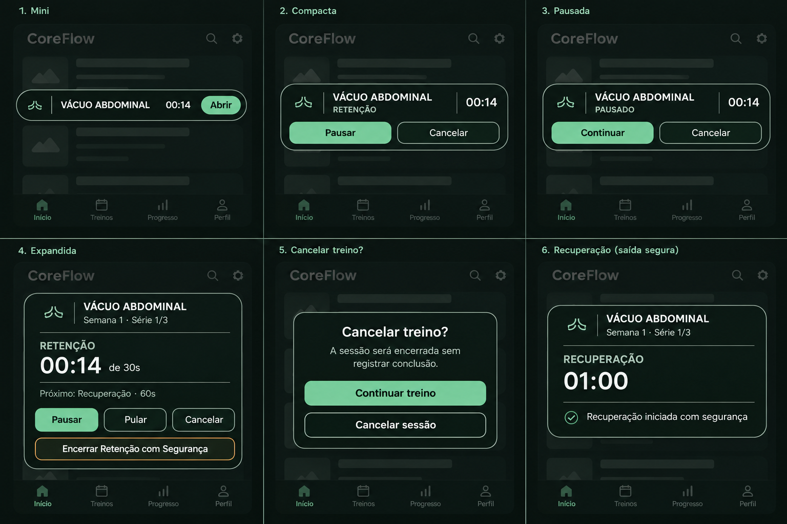
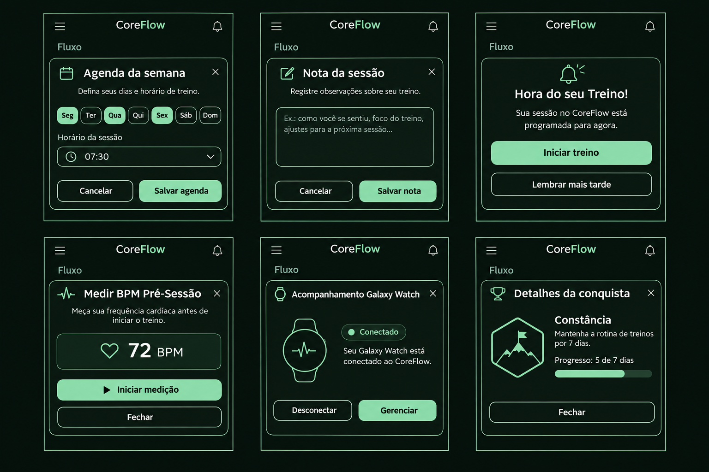

Abas principais
Hoje; Programas; Pausas; Evolução; Perfil.
CoreFlow · proposta visual
Pranchas para revisar a direção visual das abas, práticas, programas, diálogos auxiliares, configurações e overlay das pílulas antes de avançar para a aplicação completa.
01 · Navegação principal
Hoje mantém os cinco atalhos de prática em largura total e os ícones aprovados; a navegação conserva os cinco destinos.

02 · Práticas
Tratamento das práticas continua distinguindo configuração, instrução, execução e recuperação, sem alterar a sequência dos exercícios.

03 · Programas e sessões
Cards e diálogos devem manter nomes, passos, tempos, metas diárias e regras dos protocolos configurados.

04 · Configurações e apoio
As telas auxiliares preservam opções e avisos já disponíveis, com foco em leitura, controles claros e uso local.

05 · Área crítica
Esta prancha separa os estados mini, compacto, pausado e expandido e evidencia confirmação de cancelamento e saída segura da retenção.

06 · Diálogos auxiliares
Referências visuais para diálogos secundários usados em agenda, registro, medição, conquistas e conexão com o relógio.

07 · Cobertura
Este mapa é a referência para concluir o redesign sem perder caminhos existentes.
Hoje; Programas; Pausas; Evolução; Perfil.
Vácuo: postura, série, timer, tutorial, resumo e saída segura. Modo discreto: resistência, velocidade e Bracing. Pausas: Corpo, Mente, circuito e pausa de resposta. Mindfulness: seleção, áudio, progresso e conclusão. Respiração guiada: SOS, Em Caixa, Expiração Longa, Igual e Personalizado, com ajuste de fases e conclusão.
Catálogo; detalhes de Bracing e Kegel; edição; exercícios da sequência; execução passo a passo; avançar, pausar, pular, cancelar; confirmação; conclusão; ajuste manual do progresso; lembretes por sessão.
Períodos; resumo de tempo; gráfico semanal e mensal; agenda; sessões por dia; conquistas e detalhes; dica de saúde e reprodução de voz.
Editar nome/meta; lembretes dos programas; voz e vibração; tema AMOLED; acessibilidade; modo treino flutuante; Galaxy Watch; backup, importação e proteção do progresso.
Onboarding em três passos; meta diária; editar programa; agenda; nota; medição de BPM; companion do smartwatch; lembrete interativo; tutorial e resumo do Vácuo; conclusão da respiração guiada.
Mini → compacto → expandido; pausa e retomada; próximo passo; cancelamento com confirmação; recolhimento automático; overlay sobre outro app; saída segura da retenção para recuperação.
Os fluxos interativos já aprovados podem ser percorridos no protótipo Fluxo completo, incluindo os seletores das pílulas e o caminho de recuperação segura.